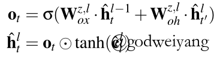

昨天又鸽了一天，由于水平有限，最主要还是懒，一篇paper看了两天才看了个大概。最近很颓废啊，白天啥都不想干一天就这么过去了，明天开始还是写写毕设代码吧，再好好研究研究。
介绍
这次介绍的仍然是树状LSTM，但是这次是在依存句法树上做的LSTM。主要功能就是给定一个句子的依存句法树，预测这个句子的生成概率。实验主要是在Microsoft Sentence Completion Challenge上面进行的，取得了不错的效果。不仅如此，这个模型还可以对依存句法分析产生的依存句法树进行重排序，从而提升依存句法分析的效果。（PS. 又让我联想到了我的毕业论文，用SU-RNN对PCFG产生的成分句法树进行重排序。。。。。。都是泪，代码还没开始动。）
模型
首先介绍几个概念。
依存路径
如上图所示，虚线箭头就是依存树中的箭头，其中就是到的head结点。那么就是左边的第一个结点，边类型叫做边，而继续向左，例如边类型叫做边。同理，向右的边也有两种类型和。
那么依存路径定义为从结点到结点的路径，注意不是原来依存树的路径哦。具体计算方式如下：
以上图为例，原来到的路径为，而现在变成了。
那么给定依存树，句子的概率可以表示为
由于每个句子都有，所以就不需要计算它的概率了。按照树的宽度优先搜索顺序访问。
树状LSTMs
那么问题就是如何计算了。我们定义4种LSTM：GEN-L,GEN-R,GEN-NX-L,GEN-NX-R，分别用来表示上文中提到的四种类型的边：LEFT,RIGHT,NX-LEFT,NX-RIGHT。
每个结点的表示如下计算：
概率表示为：
注意这里为了简化计算，省略了全部的偏移向量。
这里用了深层LSTM的内部结点函数，具体直接看公式吧，有点晕。。。

直接附上原文解释：
左依赖树状LSTMs
上面的方法忽略了同一个结点向左向右依赖之间的联系，举个例子，The car factory sold cars，如果只根据向右的依赖，由sold是无法推出cars的，而加上左依赖The car factory之后就能推出了，所以就提出了这种改进。结构如下：
也就是计算向右依赖的第一个结点之前，先计算完向左依赖的所有结点（上图绿色箭头部分），然后将最后一个隐含层输出作为向右依赖的第一个结点的输入。
首先是左边依赖的表示计算，注意和之前的向左计算方向是反的：
然后是向右依赖的计算：
训练
定义两种损失函数，分别对应小规模数据和大规模数据。
实验
我就只关注了这个模型的附属品————句法分析上的性能。
看起来左依赖树状LSTMs相比树状LSTM基本没有提升，可能在其他任务上不一样吧。
总结
这个模型看了我两天，感觉以前没见过，还挺新奇的（事实是我孤陋寡闻了）。而且我也不知道搞这么复杂究竟能有多大的性能提升，感觉上训练时间会很长？性价比不是很高？